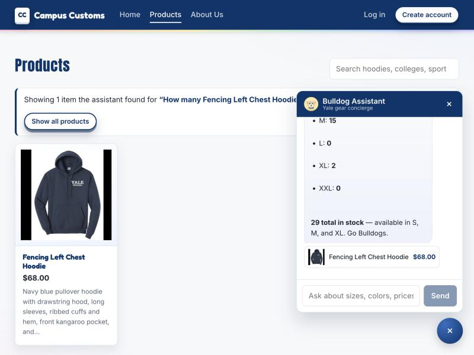
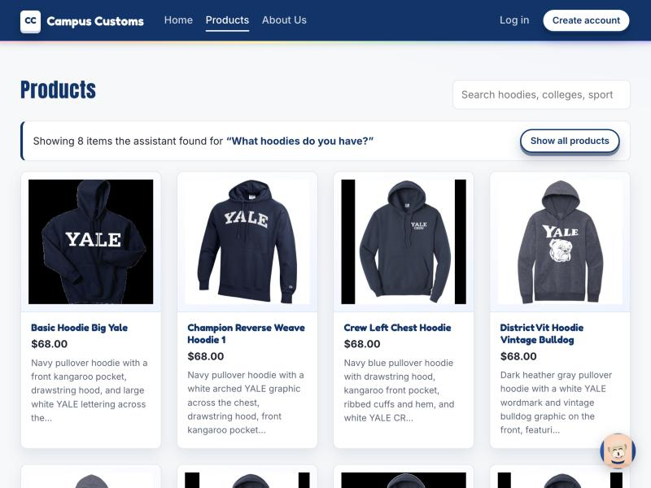
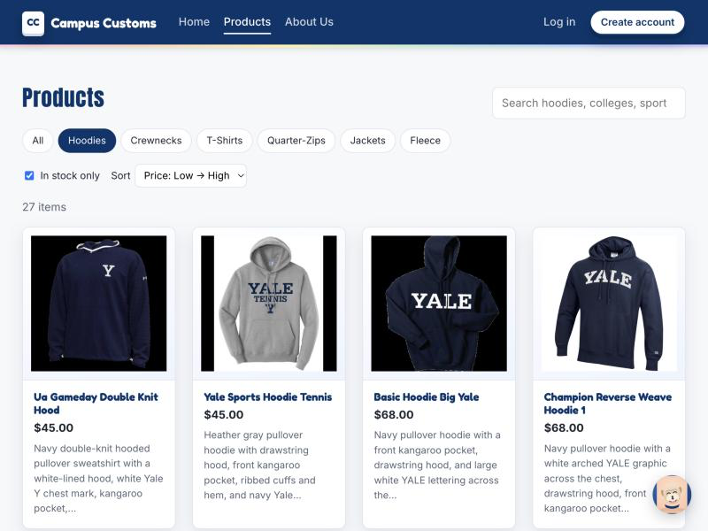

HW4 Problem 11 · screenshots captured from the running app (React/Vite front end + FastAPI/PydanticAI back end)

Asked the assistant how many Fencing Left Chest Hoodies are in stock by size and the price.
It answered $68 with exact per-size counts (M 15, L 0, XL 2, XXL 0) and
29 total — available in S, M, and XL. These numbers match the campus_customs.db
inventory and catalogue tables exactly, proving the agent reads live data and never invents stock or price.

After asking “What hoodies do you have?” in the chat, the site navigated to the Products page and rendered the matching items as product cards (image, name, price, short description) under a banner that names the query. This shows chat search results flowing onto the page dynamically; each card still opens its single-item detail view when clicked.

The Products page filtered to the Hoodies category with “In stock only” checked and sorted Price: Low → High. The grid updates to 27 items with the cheapest first ($45, $45, …), demonstrating the shopping filter/sort usability feature added in Problem 9.